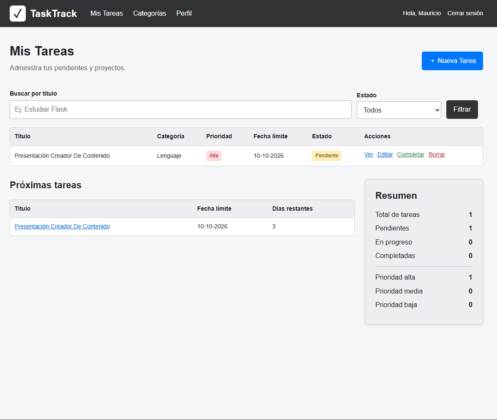

TaskTrack
Un lugar para organizar tareas, categorías y prioridades. Una aplicación que conecta una interfaz sencilla con la lógica de Flask y MySQL.
SANTIAGO, CHILE · EN CONSTANTE APRENDIZAJE
Ideas que se convierten
en proyectos reales.
Soy estudiante técnico en programación y desarrollador Full Stack en formación. Aprendo creando aplicaciones web, resolviendo problemas y mejorando un paso a la vez.
01 / TRABAJO SELECCIONADO
Cada proyecto es una oportunidad
para entender algo nuevo.

Un lugar para organizar tareas, categorías y prioridades. Una aplicación que conecta una interfaz sencilla con la lógica de Flask y MySQL.
Gestión de libros con creación, consulta, edición y eliminación. Un proyecto académico para practicar autenticación y bases de datos relacionales.
Rutas, formularios, consultas SQL e interfaces web. Los ejercicios que me ayudan a fortalecer las bases antes del siguiente proyecto.
CÓDIGO PARA EXPLORAR
Mis proyectos, en un apartado propio.
Descarga los archivos o explora cada carpeta en GitHub.
Registro e inicio de sesión con validaciones, contraseñas cifradas y una página protegida.
Catálogo de Pokémon con consultas por nombre, número y cantidad mediante rutas de Flask.
Un formulario, sesiones y una predicción aleatoria presentada con los datos del usuario.
Gestión de libros con autenticación y operaciones de creación, consulta, edición y eliminación.
Organización de tareas, categorías, estados y prioridades con una base de datos relacional.
Cada ZIP incluye el código, los recursos y una guía de inicio para ejecutar el proyecto en tu equipo.
02 / DETRÁS DEL CÓDIGO
Me interesa entender cómo funcionan las cosas y aprender a construirlas.
Soy estudiante de cuarto medio técnico-profesional en el Liceo Comercial Vate Vicente Huidobro, en Santiago. Mi formación en programación comenzó en 2024 y hoy sigo desarrollando mis habilidades en Full Stack Python.
En mis proyectos académicos he trabajado con Python, Flask y MySQL, conectando formularios, sesiones y bases de datos. Me interesa seguir creciendo tanto en la lógica del backend como en la experiencia de las interfaces.
Busco una práctica profesional donde pueda aportar, trabajar en equipo y aprender de proyectos reales. Todavía hay mucho por descubrir, y eso es lo que me motiva.
03 / MI CAJA DE HERRAMIENTAS
Conocimientos en desarrollo.
Siempre con espacio para aprender.
Estructura, estilos e interacción para la web.
Rutas, formularios, sesiones y validaciones.
Organizar el código, resolver y compartir.
04 / DE LA IDEA A LA APLICACIÓN
Crear una aplicación es conectar muchas piezas. Este recorrido visual muestra cómo se relacionan la interfaz, las rutas y los datos en un proyecto como TaskTrack.
Primero, una idea: organizar tareas. HTML y CSS construyen la interfaz. Un formulario envía los datos a una ruta de Flask. Python valida la información y organiza la lógica. MySQL guarda las tareas y sus relaciones. Jinja2 presenta el resultado en la página. TaskTrack reúne esas piezas en una aplicación con autenticación, categorías y filtros. El siguiente paso es seguir aprendiendo y mejorando.
05 / LA PRÓXIMA CONVERSACIÓN
Busco mi primera oportunidad de práctica profesional. Si tienes un proyecto, una idea o una oportunidad para aprender, conversemos.
mauricioflores1806@gmail.com